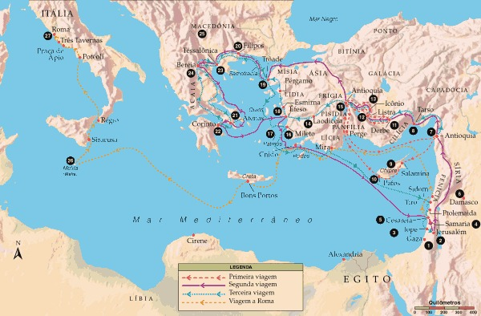

Paulo de Tarso, o apóstolo Paulo, sem dúvida é um dos personagens bíblicos mais conhecidos por todos os cristãos. Ele considerado como sendo o maior líder do cristianismo. Neste texto, nós conheceremos mais sobre a história de Paulo, autor de treze epístolas presentes na Bíblia.
Paulo, nome romano de Saulo, nasceu em Tarso na Cilícia (Atos 16:37; 21:39; 22:25). Tarso não era um lugar insignificante (Atos 21:39), ao contrário, era um centro de cultura grega. Tarso era uma cidade universitária que ficava próxima da costa nordeste do Mar Mediterrâneo. Embora tenha nascido um cidadão romano, Paulo era um judeu da Dispersão, um israelita circuncidado da tribo de Benjamin, e membro zeloso do partido dos Fariseus (Romanos 11:1; Filipenses 3:5; Atos 23:6).
A infância e adolescência do apóstolo Paulo tem sido tema de grande debate entre os estudiosos. Alguns defendem que o apóstolo Paulo passou toda sua infância em Tarso, indo apenas durante sua adolescência para Jerusalém. Outros defendem que Paulo foi para Jerusalém ainda bem pequeno. Nesse caso, ele teria passado sua infância longe de Tarso. Na verdade, desde seu nascimento até seu aparecimento em Jerusalém como perseguidor dos cristãos, conforme os relatos do livro de Atos dos Apóstolos, há pouca informação sobre a vida do apóstolo Paulo.
Embora não se saiba ao certo com quantos anos Paulo saiu de Tarso, sabe-se com certeza que ele foi educado em Jerusalém, sob o ensino do renomado doutor da lei, Gamaliel, neto de Hillel. Paulo conhecia profundamente a cultura grega. Ele também falava o aramaico, era herdeiro da tradição do farisaísmo, estrito observador da Lei e mais avançado no judaísmo do que seus contemporâneos (Gálatas 1:14; Filipenses 3:5,6). Considerando todos estes aspectos, pode-se afirmar que sua família possuía alguns recursos e desfrutava de posição proeminente na sociedade.
O apóstolo Paulo possuía cidadania romana. Sobre isso, ele próprio afirma ser cidadão romano de nascimento (Atos 22:28). Provavelmente essa declaração indica que sua cidadania foi herdada de seu pai. Estima-se que naquele tempo pelo menos dois terços da população do Império Romano não possuía cidadania romana. Não se sabe ao certo como o pai do apóstolo conseguiu tal cidadania. Algumas pessoas importantes e abastadas conseguiam comprar a cidadania (Atos 22:28). Outras, conseguiam tal cidadania ao prestar algum relevante ao governo romano. A cidadania romana concedia alguns privilégios, dentre os quais podemos citar:
O livro de Atos dos Apóstolos informa que quando Estêvão foi apedrejado, suas vestes foram depositadas aos pés de Paulo de Tarso (Atos 7:58). Após esse episódio da morte de Estêvão, Paulo de Tarso assumiu uma posição importante na perseguição aos cristãos. Ele recebeu autoridade oficial para liderar as perseguições. Além disso, na qualidade de membro do concílio do Sinédrio, ele dava o seu voto a favor da morte dos cristãos (Atos 26:10).
O próprio Paulo afirma que “respirava ameaça e morte contra os discípulos do Senhor” (Atos 9:1). Além de deflagrar a perseguição em Jerusalém, ele ainda solicitou cartas ao sumo sacerdote para as sinagogas em Damasco. Seu objetivo era levar preso para Jerusalém qualquer um que fosse seguidor de Cristo, tanto homem como mulher (Atos 9:2). Paulo perseguia e assolava a Igreja de Deus (Gálatas 1:13). Ele fazia isso acreditando que estava servindo a Deus e preservando a pureza da Lei.
As narrativas no livro de Atos, e as notas do próprio apóstolo Paulo em suas epístolas, sugerem uma súbita conversão. Entretanto, alguns intérpretes defendem que algumas experiências ao longo de sua vida devem tê-lo preparado previamente para aquele momento. A experiência do martírio de Estêvão e sua campanha de casa em casa para perseguir os cristãos podem ser exemplos disto (Atos 8:1-3; 9:1,2; 22:4; 26:10,11).
O que se sabe realmente é que Paulo de Tarso partiu furiosamente em direção a Damasco com o intuito de destruir a comunidade cristã daquela cidade. De repente, algo inesperado aconteceu, algo que causou uma mudança radical, não só na vida de Paulo de Tarso, mas no curso da História.
"E, indo no caminho, aconteceu que, chegando perto de Damasco, subitamente o cercou um resplendor de luz do céu. E, caindo em terra, ouviu uma voz que lhe dizia: Saulo, Saulo, por que me persegues? E ele disse: Quem és, Senhor? E disse o Senhor: Eu sou Jesus, a quem tu persegues. Duro é para ti recalcitrar contra os aguilhões. E ele, tremendo e atônito, disse: Senhor, que queres que eu faça? E disse-lhe o Senhor: Levanta-te, e entra na cidade, e lá te será dito o que te convém fazer." (Atos 9:3-6)
Ao escrever Atos dos Apóstolos, Lucas interpreta a conversão de Paulo de Tarso como um ato miraculoso, um momento em que um inimigo declarado de Cristo transformou-se em apóstolo seu. Os homens que estavam com Paulo ouviram a voz, mas não compreenderam as palavras. Eles ficaram espantados, mas não puderam ver a Pessoa de Cristo.
Por outro lado, Paulo viu o Cristo ressurreto e ouviu suas palavras. Esse encontro foi tão importante para Paulo que a base de sua afirmação sobre a legalidade de seu apostolado está fundamentada nessa experiência (1 Coríntios 9:1; 15:8-15; Gálatas 1:15-17). Considerando que Paulo de Tarso não havia sido um doze discípulos de Jesus, além de ter perseguido seus seguidores, a necessidade e importância da revelação pessoal de Cristo para Paulo fica evidente. Essa experiência transformou Paulo de Tarso profundamente como é possível notar:
Após o encontro que teve com Cristo, o apóstolo Paulo chegou em Damasco e recebeu a visita de Ananias. Foi Ananias quem o batizou (Atos 9:17,18). Também foi ali, naquela mesma cidade, que Paulo começou sua obra evangelística.
Não há informações detalhadas sobre os primeiros anos de seu ministério. O que se sabe é que o apóstolo Paulo pregou rapidamente em Damasco e depois foi passar um tempo na Arábia (Atos 9:20-22; Gl 1:17). A Bíblia não esclarece o que ele fez ali, nem mesmo qual o lugar específico da Arábia em que ele ficou. Depois, o apóstolo Paulo retornou a Damasco, onde sua pregação provocou uma oposição tão grande que ele precisou fugir para salvar sua própria vida (2 Coríntios 11:32,33).
Naquela ocasião ele fugiu para Jerusalém (Gálatas 1:18). Nesse tempo havia completado cerca de três anos de sua conversão. Paulo tentou juntar-se aos discípulos, porém estavam todos receosos com ele. Foi então que Barnabé se dispôs a apresentá-lo aos líderes dos cristãos. Entretanto, seu período em Jerusalém foi muito rápido, pois novamente os judeus procuravam assassiná-lo.
Por conta disso, os cristãos decidiram despedir Paulo, uma decisão confirmada pelo Senhor numa visão. Segundo o que ele próprio afirma em Gálatas 1:18, ele ficou somente quinze dias com Pedro. Essa informação se harmoniza com o relato de Atos 22:17-21. Paulo acabou deixando Jerusalém antes que pudesse se encontrar com os demais apóstolos, e também antes de se tornar conhecido pessoalmente pelas igrejas da Judeia. Porém, os crentes de toda aquela região já ouviam as boas-novas sobre Paulo.
"E não era conhecido de vista das igrejas da Judéia, que estavam em Cristo; Mas somente tinham ouvido dizer: Aquele que já nos perseguiu anuncia agora a fé que antes destruía." (Gálatas 1:22,23)
Logo depois o apóstolo Paulo foi enviado à sua cidade natal, Tarso. Ali ele passou um período de silêncio de cerca de dez anos. Embora esses anos sejam conhecidos como o sendo o período silencioso do ministério do apóstolo Paulo, é provável que ele tenha fundado algumas igrejas naquela região. Estudiosos sugerem que as igrejas mencionadas em Atos 15:41, tenham sido fundadas por Paulo durante esse mesmo período.
É certo que Barnabé, ao ouvir falar da obra que Paulo estava desempenhando, solicitou a presença do apóstolo em Antioquia na posição de um obreiro auxiliar. O objetivo era que Paulo o ajudasse numa promissora missão evangelística entre os gentios. Após cerca de um ano, ocorreu um período de grande fome. Então os crentes de Antioquia providenciaram contribuições para servir de auxilio aos cristãos da Judéia. Essas contribuições foram levadas por Paulo e Silas. Havendo completado sua missão, Paulo e Silas regressaram a Antioquia.
Esse período em Antioquia foi essencial no ministério do apóstolo Paulo. Foi ali que sua missão de levar o Evangelho aos gentios começou a ganhar força. Foi enquanto estava em Antioquia que o Espírito Santo orientou a Igreja a separar Barnabé e Paulo para a obra à qual Deus os chamara. Só então tiveram início as viagens missionárias do apóstolo Paulo.
"E, servindo eles ao Senhor, e jejuando, disse o Espírito Santo: Apartai-me a Barnabé e a Saulo para a obra a que os tenho chamado. Então, jejuando e orando, e pondo sobre eles as mãos, os despediram." (Atos 13:2,3)
O trabalho evangelístico do apóstolo Paulo abrangeu um período de cerca de dez anos. Esse trabalho aconteceu principalmente em quatro províncias do Império Romano: Galácia, Macedônia, Acaia e Ásia. Paulo concentrava-se nas cidades-chave, isto é, nos maiores centros populacionais de sua época. Isso fazia parte de seu planejamento missionário. Quando alguns judeus e gentios aceitavam a mensagem do Evangelho, logo esses convertidos tornavam-se o núcleo de uma nova comunidade local. Dessa forma, o apóstolo Paulo alcançou até mesmo as áreas rurais. A estratégia missionária usada pelo apóstolo Paulo pode ser resumida da seguinte forma:
Em Atos 14:21-23, é possível perceber que o método de Paulo para estabelecer uma igreja local obedecia a um padrão regular. Primeiramente era feito um trabalho dedicado ao evangelismo, com a pregação do Evangelho. Depois havia um trabalho de edificação, onde os crentes convertidos eram fortalecidos e encorajados. Por último, presbíteros eram escolhidos em cada igreja, para que a organização eclesiástica fosse estabelecida.
A primeira viagem missionária de Paulo está registrada em Atos 13:1-14:28. Não se sabe exatamente quanto tempo durou essa primeira viagem. Sabe-se apenas que ela deve ter ocorrido por volta de 44 e 50 d.C. O ponto de partida foi Antioquia, um lugar que havia se tornado um tipo de centro do Cristianismo entre os gentios.
Basicamente a viagem foi concentrada na Ilha de Chipre e na parte sudeste da província romana da Galácia. Barnabé foi o líder até um determinado momento da viagem, e Paulo era o pregador principal. João Marcos servia como auxiliador dos missionários principais. Entretanto, João Marcos os deixou (literalmente os abandonou) e retornou para Jerusalém. A partir desse ponto, o apóstolo Paulo assumiu a liderança da missão.
A segunda viagem missionária de Paulo está registrada em Atos 15:36-18:22. O propósito dessa viagem, conforme o próprio Paulo diz, era visitar os irmãos por todas as cidades em que a palavra do Senhor já havia sido anunciada (Atos 15:36). No entanto, ao discordarem sobre a ida de João Marcos na viagem missionária, Paulo e Barnabé decidiram se separar. Então Paulo levou consigo Silas, também chamado de Silvano.
A data provável dessa viagem fica entre os anos de 50 e 54 d.C. Essa segunda viagem cobriu um território bem maior do que a primeira, estendendo-se até a Europa. A obra evangelística foi concluída na Macedônia e Acaia, e as cidades visitadas foram: Filipos, Tessalônica, Beréia, Atenas e Corinto.
O apóstolo Paulo permaneceu em Corinto um longo tempo (Atos 18:11,18). Ali ele pregou o Evangelho e exerceu sua atividade profissional de fazer tendas. Foi dessa cidade que ele enviou a Epístola aos Gálatas e, provavelmente, um pouco depois, também enviou as Epístolas aos Tessalonicenses. Paulo também parou brevemente em Éfeso, e ao partir prometeu retornar em outra ocasião (Atos 18:20,21).
A terceira viagem missionária de Paulo está registrada em Atos 18:23-21:16. Essa viagem ocorreu entre 54 e 58 d.C. O apóstolo Paulo atravessou a região da Galácia e Frígia e depois prosseguiu em direção a Ásia e à sua principal cidade, Éfeso. Ali o apóstolo ficou por um longo período, cumprindo a promessa anteriormente feita (Atos 19:8-10; 20:3).
É provável que todas, se não pelo menos a maioria das sete igrejas da Ásia, tenha sido fundada durante esse período. Parece que antes de Paulo escrever a Primeira Epístola aos Coríntios, ele fez uma segunda visita à cidade de Corinto, regressando logo depois para Éfeso. Então, mais tarde, ele escreveu 1 Coríntios.
Quando deixou Éfeso, Paulo partiu para a Macedônia. Foi ali, talvez em Filipos, que ele escreveu a Segunda Epístola aos Coríntios. Depois, finalmente o apóstolo Paulo passou pela terceira vez em Corinto. Antes de partir dessa cidade, provavelmente ele escreveu a Epístola aos Romanos (cf. Romanos 15:22-25).
O resultado das viagens missionárias do apóstolo Paulo foi extraordinário. O Evangelho se espalhou consideravelmente. Estima-se que perto do final do período apostólico, o número total de cristãos no mundo era em torno de quinhentos mil. Apesar de esse resultado ter sido fruto de um árduo trabalho que envolveu um enorme número de pessoas, conhecidas e anônimas, o obreiro que mais se destacou nessa missão certamente foi o apóstolo Paulo.
Em um determinado momento, devido ao crescente número de gentios na Igreja, questões a respeito da Lei e dos costumes judaicos sugiram entre os cristãos. Muitos cristãos judeus insistiam que os gentios deveriam observar a Lei Mosaica. Eles queriam que os crentes gentios se enquadrassem nos costumes judaicos, principalmente em relação à circuncisão. Para eles, só assim poderia haver igualdade na comunidade cristã.
O apóstolo Paulo identificou esse movimento judaizante como uma ameaça à verdadeira natureza do Evangelho da graça. Por isso ele se posicionou claramente contra essa situação. Diante dessas circunstâncias, o apóstolo Paulo repreendeu Pedro publicamente (Gálatas 2:14). Pedro havia se separado de alguns crentes gentios, a fim de evitar problemas com certos cristãos judaizantes. Esse também foi o pano de fundo que levou o apóstolo Paulo a escrever uma epístola de advertência aos Gálatas. Nessa epístola ele apresenta com grande ênfase o tema da salvação pela graça mediante a fé.
Podemos dizer que esse acontecimento foi a primeira crise teológica da Igreja. Para que o problema fosse solucionado, Paulo e Barnabé foram enviados a uma conferência com os apóstolos e anciãos em Jerusalém. O concílio decidiu que, de forma geral, os gentios que se convertessem não estavam sob a obrigação de observar os costumes judaicos.
Existe muita discussão em relação ao número de prisões que o apóstolo Paulo sofreu. Essa discussão de dá, principalmente pelo fato de o livro de Atos não descrever toda a história do apóstolo Paulo. Além disso, provavelmente o apóstolo Paulo foi preso algumas vezes por um período muito curto de tempo, como por exemplo, em Filipos (Atos 16:23).
Ao falar sobre suas próprias prisões, o apóstolo Paulo escreve o seguinte:
"São ministros de Cristo? (falo como fora de mim) eu ainda mais: em trabalhos, muito mais; em açoites, mais do que eles; em prisões, muito mais; em perigo de morte, muitas vezes." (2 Coríntios 11:23)
Considerando apenas as principais prisões do apóstolo Paulo, sabe-se que ele foi preso em Jerusalém (Atos 21), e para impedir que fosse linchado, ele foi transferido para Cesareia. Nessa cidade Felix, o governador romano, deixou o apóstolo Paulo na prisão por dois anos (Atos 23-26). Festo, sucessor de Felix, sinalizou que poderia entregar Paulo aos judeus, para que por eles ele fosse julgado.
Como Paulo sabia que o resultado do julgamento seria totalmente desfavorável a sua pessoa, então na qualidade de cidadão romano, ele apelou para César. Depois de um discurso perante o rei Agripa e Berenice, o apóstolo Paulo foi enviado sob escolta para Roma. Após uma terrível tempestade, o navio a qual ele estava naufragou, e Paulo passou o inverno em Malta.
Finalmente o apóstolo Paulo chegou a Roma na primavera. Na capital do Império ele passou dois anos em prisão domiciliar. Apesar disso ele tinha total liberdade para ensinar sobre o Evangelho (Atos 28:31). É exatamente nesse ponto que termina a história descrita no livro de Atos dos Apóstolos. O restante da vida de Paulo precisa ser contado utilizando-se os registros de outras fontes.
Por isso, as únicas informações adicionais que encontramos no Novo Testamento sobre a biografia do apóstolo Paulo, parte das Epístolas Pastorais. Essas epístolas parecem sugerir que o apóstolo Paulo foi solto depois dessa primeira prisão em Roma relatada em Atos por volta de 63 d.C. (2 Timóteo 4:16,17). Após ser solto, ele teria visitado a área do Mar Egeu e viajado até a Espanha.
Depois, novamente Paulo foi aprisionado em Roma. Desa última vez ele acabou executado pelas mãos de Nero por volta de 67 e 68 d.C. (2 Timóteo 4:6-18). Tudo isso indica que as Epístolas Pastorais documentam situações não historiadas em Atos. A Epístola de Clemente (cerca de 95 d.C.) e o cânon Muratoriano (cerca de 170 d.C.) testificam sobre uma viagem do apóstolo Paulo a Espanha.
A tradição cristã conta que a morte do apóstolo Paulo ocorreu junto da estrada de Óstia, fora da cidade de Roma. Ele teria sido decapitado. Talvez o texto que mais defina a biografia do apóstolo Paulo seja exatamente esse:
"Combati o bom combate, acabei a carreira, guardei a fé. Desde agora, a coroa da justiça me está guardada, a qual o Senhor, justo juiz, me dará naquele dia; e não somente a mim, mas também a todos os que amarem a sua vinda." (2 Timóteo 4:7,8)